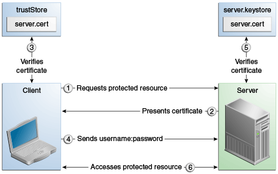

<login-config>
<auth-method>CLIENT-CERT</auth-method>
</login-config>Authentication Mechanisms
This section discusses the client authentication and mutual authentication mechanisms.
The following topics are addressed here:
Client Authentication
With client authentication, the web server authenticates the client by using the client’s public key certificate. Client authentication is a more secure method of authentication than either basic or form-based authentication. It uses HTTP over SSL (HTTPS), in which the server authenticates the client using the client’s public key certificate. SSL technology provides data encryption, server authentication, message integrity, and optional client authentication for a TCP/IP connection. You can think of a public key certificate as the digital equivalent of a passport. The certificate is issued by a trusted organization, a certificate authority (CA), and provides identification for the bearer.
Before using client authentication, make sure that the client has a valid public key certificate. For more information on creating and using public key certificates, read Working with Digital Certificates.
The following example shows how to declare client authentication in your deployment descriptor:
Mutual Authentication
With mutual authentication, the server and the client authenticate each other. Mutual authentication is of two types:
-
Certificate-based (see Figure 53-1)
-
User name/password-based (see Figure 53-2)
When using certificate-based mutual authentication, the following actions occur.
-
A client requests access to a protected resource.
-
The web server presents its certificate to the client.
-
The client verifies the server’s certificate.
-
If successful, the client sends its certificate to the server.
-
The server verifies the client’s credentials.
-
If successful, the server grants access to the protected resource requested by the client.
Figure 53-1 shows what occurs during certificate-based mutual authentication.
Figure 53-1 Certificate-Based Mutual Authentication

In user name/password-based mutual authentication, the following actions occur.
-
A client requests access to a protected resource.
-
The web server presents its certificate to the client.
-
The client verifies the server’s certificate.
-
If successful, the client sends its user name and password to the server.
-
The server verifies the client’s credentials
-
If the verification is successful, the server grants access to the protected resource requested by the client.
Figure 53-2 shows what occurs during user name/password-based mutual authentication.
Figure 53-2 User Name/Password-Based Mutual Authentication

Enabling Mutual Authentication over SSL
This section discusses setting up client-side authentication. Enabling both server-side and client-side authentication is called mutual, or two-way, authentication. In client authentication, clients are required to submit certificates issued by a certificate authority that you choose to accept.
There are at least two ways to enable mutual authentication over SSL.
-
The preferred method is to set the method of authentication in the
web.xmlapplication deployment descriptor toCLIENT-CERT. This enforces mutual authentication by modifying the deployment descriptor of the given application. In this way, client authentication is enabled only for a specific resource controlled by the security constraint, and the check is performed only when the application requires client authentication. -
A less commonly used method is to set the
clientAuthproperty in thecertificaterealm totrueif you want the SSL stack to require a valid certificate chain from the client before accepting a connection. Afalsevalue (which is the default) will not require a certificate chain unless the client requests a resource protected by a security constraint that usesCLIENT-CERTauthentication. When you enable client authentication by setting theclientAuthproperty totrue, client authentication will be required for all the requests going through the specified SSL port. If you turnclientAuthon, it is on all of the time, which can severely degrade performance.
When client authentication is enabled in both of these ways, client authentication will be performed twice.
Creating a Client Certificate for Mutual Authentication
If you have a certificate signed by a trusted Certificate Authority (CA)
such as Verisign, and the GlassFish Server cacerts.jks file already
contains a certificate verified by that CA, you do not need to complete
this step. You need to install your certificate in the GlassFish Server
certificate file only when your certificate is self-signed.
From the directory where you want to create the client certificate, run
keytool as outlined here. When you press Enter, keytool prompts you
to enter the server name, organizational unit, organization, locality,
state, and country code.
You must enter the server name in response to keytool's first prompt,
in which it asks for first and last names. For testing purposes, this
can be localhost. If this example is to verify mutual authentication
and you receive a runtime error stating that the HTTPS host name is
wrong, re-create the client certificate, being sure to use the same host
name you will use when running the example. For example, if your machine
name is duke, then enter duke as the certificate CN or when prompted
for first and last names. When accessing the application, enter a URL
that points to the same location (for example,
https://duke:8181/mutualauth/hello). This is necessary because during
SSL handshake, the server verifies the client certificate by comparing
the certificate name to the host name from which it originates.
To create a keystore named client_keystore.jks that contains a client
certificate named client.cer, follow these steps.
-
Create a backup copy of the server truststore file. To do this,
-
Change to the directory containing the server’s keystore and truststore files, domain-dir`\config`.
-
Copy
cacerts.jkstocacerts.backup.jks. -
Copy
keystore.jkstokeystore.backup.jks.Do not put client certificates in the
cacerts.jksfile. Any certificate you add to thecacertsfile effectively can be a trusted root for any and all certificate chains. After you have completed development, delete the development version of thecacertsfile and replace it with the original copy. -
Generate the client certificate. Enter the following command from the directory where you want to generate the client certificate:
java-home\bin\keytool -genkey -alias client-alias -keyalg RSA -keypass changeit -storepass changeit -keystore client_keystore.jks -
Export the generated client certificate into the file
client.cer:java-home\bin\keytool -export -alias client-alias -storepass changeit -file client.cer -keystore client_keystore.jks -
Add the certificate to the truststore file domain-dir`/config/cacerts.jks`. Run
keytoolfrom the directory where you created the keystore and client certificate. Use the following parameters:java-home\bin\keytool -import -v -trustcacerts -alias client-alias -file client.cer -keystore domain-dir/config/cacerts.jks -keypass changeit -storepass changeitThe
keytoolutility returns a message like this one:Owner: CN=localhost, OU=My Company, O=Software, L=Santa Clara, ST=CA, C=US Issuer: CN=localhost, OU=My Company, O=Software, L=Santa Clara, ST=CA, C=US Serial number: 3e39e66a Valid from: Tue Nov 27 12:22:47 EST 2012 until: Mon Feb 25 12:22:47 EST 2013 Certificate fingerprints: MD5: 5A:B0:4C:88:4E:F8:EF:E9:E5:8B:53:BD:D0:AA:8E:5A SHA1:90:00:36:5B:E0:A7:A2:BD:67:DB:EA:37:B9:61:3E:26:B3:89:46:32 Signature algorithm name: SHA1withRSA Version: 3 Trust this certificate? [no]: yes Certificate was added to keystore [Storing cacerts.jks] -
Restart GlassFish Server.